Hello, I'm Yaswanth Sai
Data Analyst | Power BI Expert | Excel Specialist
 LinkedIn Profile
LinkedIn Profile
 GitHub Profile
GitHub Profile
Data Analyst | Power BI Expert | Excel Specialist
LinkedIn Profile
GitHub Profile
Passionate data analyst with a strong background in data visualization, cleaning, and analysis. My goal is to provide actionable insights that help businesses make data-driven decisions. Driven to learn quickly, advance computer proficiency and training in industry operations. Solid background in field and office settings supporting team needs. Flexible and hardworking team player focused on boosting productivity and performance with conscientious and detail-oriented approaches.


Bachelors of Science
Computer Applications, Electronics and Mathematics
October 2021 - May 2024
GPA : 7.77
MPC
June 2019 - March 2021
GPA : 8.73
SSC
March 2018 - March 2019
GPA : 8.8
Power BI Intern
Datumn Cybertech India Pvt Ltd
February 2024 - May 2024
Description:
📊 Excited to share my latest project on Bank Statement Analysis using Power BI! 💼
In this project, I utilized Power BI to dive deep into financial data extracted from bank statements, offering valuable insights for effective financial management. From visualizing cash flow trends to identifying spending patterns, this analysis empowers businesses to make informed decisions and optimize their financial strategies.
.jpg) 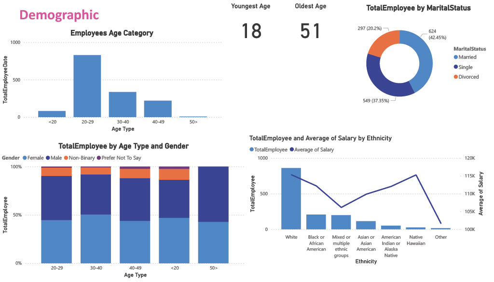
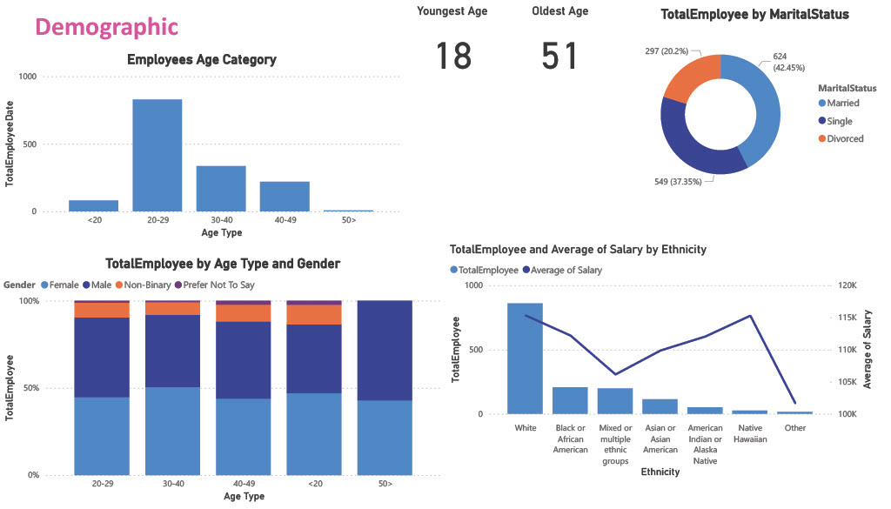
 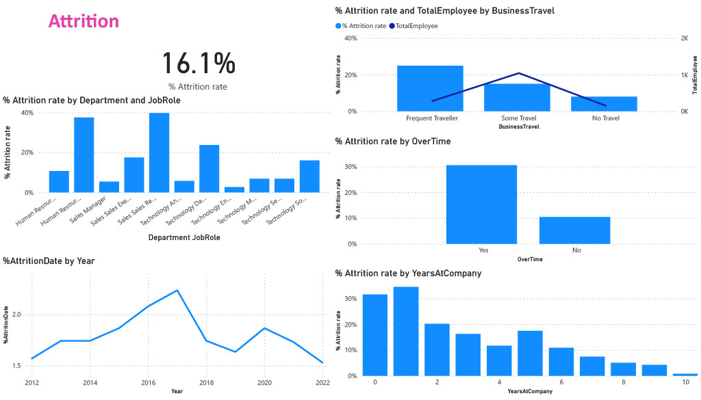
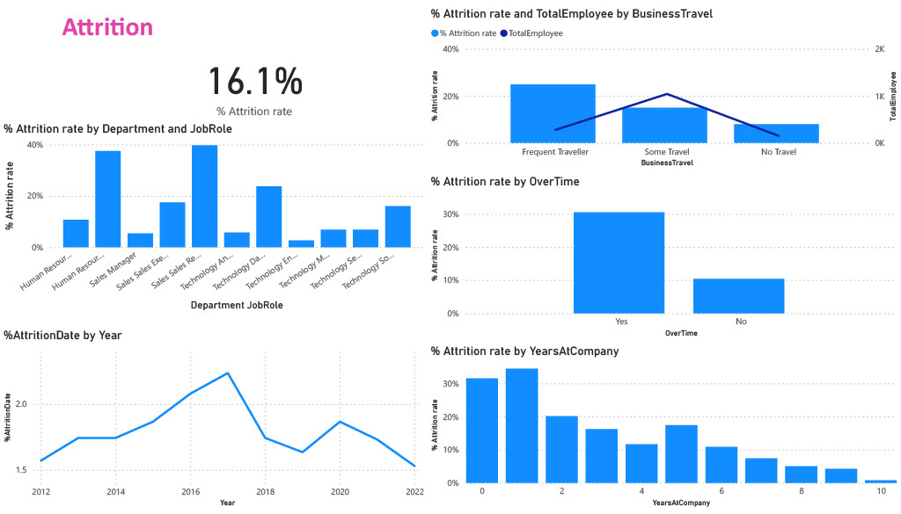
🔍 Excited to showcase my latest project: HR Analysis Dashboard using Power BI! 👥📊
In this project, I developed an interactive and comprehensive HR Analysis Dashboard to provide valuable insights into workforce data. By leveraging Power BI, I transformed raw HR data into meaningful visualizations that help organizations make data-driven decisions.
Key Features:
📈 Employee demographics and diversity analysis
🕒 Attrition and retention trends
📊 Performance metrics and productivity analysis
📅 Attendance and leave management
🏆 Employee satisfaction and engagement metrics
This dashboard empowers HR teams to identify trends, monitor key metrics, and implement strategies to improve workforce management and employee satisfaction.
Explore the dashboard and discover how data visualization can transform HR analytics
I conducted an in-depth sales analysis for FullCart using Google Sheets, developing a comprehensive dashboard to visualize key performance metrics. The analysis uncovered critical insights, such as "Set" being the top-selling category, March achieving the highest monthly sales, and Amazon emerging as the most effective sales channel. It also highlighted that adult women were the highest-grossing demographic, with Maharashtra leading in sales by state. This project empowered data-driven decision-making and optimized sales strategies.
Tools:
🚀 Sales Performance Dashboard: Unlocking Data-Driven Insights
I'm excited to share my latest work on sales analysis! This dashboard provides a comprehensive overview of key sales metrics, enabling informed decision-making and trend identification. 📊
🔹 Key Highlights:
📈 Sales growth trends over time, helping identify peak performance periods.
🌍 Regional sales breakdown, offering insights into high-performing markets.
💼 Product performance analysis, highlighting top and underperforming products.
🏆 Key sales KPIs such as revenue, customer acquisition rate, and sales conversion ratios.
This analysis helps sales teams strategize more effectively by identifying strengths and areas for improvement. By visualizing real-time data, businesses can adjust their tactics to maximize success.
🔌 Excited to unveil my latest project on Energy Consumption Analysis using Power BI! 💡
In this project, I leveraged the power of Power BI to analyze energy consumption patterns and unlock actionable insights for sustainable energy management. By delving into consumption data from various sources, I provided valuable insights to optimize energy usage, reduce costs, and minimize environmental impact.
Key Features:
📊 In-depth analysis of energy consumption trends across different time periods
💡 Visualization of energy usage patterns by building, department, or equipment
📈 Comparison of energy consumption between different facilities or locations
This project demonstrates my expertise in data analytics, visualization, and sustainability, showcasing how technology can drive positive change in energy management practices.
 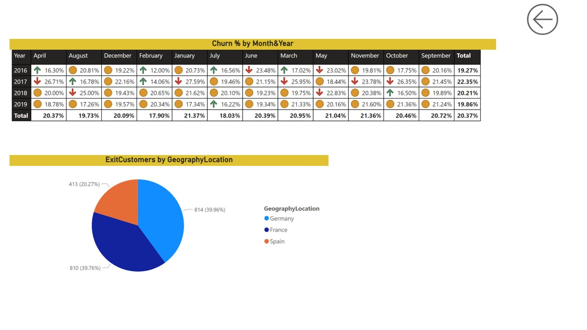
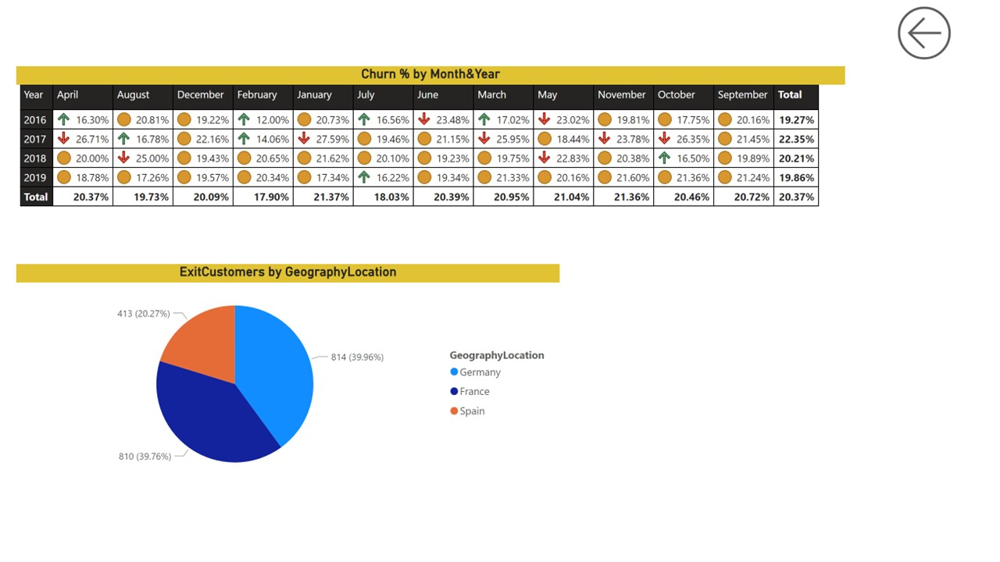
In this project, I conducted a comprehensive analysis of customer churn using Power BI, aimed at identifying key factors contributing to customer attrition. Leveraging a dataset that included customer demographics, transaction history, and service usage patterns, I developed a robust dashboard to visualize and interpret the data effectively.
Key Features:
Data Preparation: Cleaned and transformed raw data to create a structured dataset suitable for analysis.
Exploratory Data Analysis (EDA): Conducted EDA to uncover trends, patterns, and correlations influencing customer churn.
Visualization: Created interactive visualizations to highlight churn rates, customer segments at risk, and the impact of various factors on retention.
Recommendations: Delivered strategic recommendations to enhance customer retention efforts, based on data-driven findings.
Welcome to my portfolio website! As a data enthusiast with a strong foundation in data analysis and visualization, my portfolio showcases a range of projects that highlight my skills in transforming raw data into meaningful insights.
Key Features:
Data Analysis Projects: Explore my work on customer churn analysis, sales forecasting, and data-driven decision-making. Each project includes a detailed explanation of the methodology, tools used, and the outcomes achieved.
Visualizations: Discover interactive dashboards created using Power BI and Tableau, designed to present complex data in a visually engaging manner. My focus is on delivering clarity and actionable insights through effective storytelling.
Front-End Development: Browse projects where I applied HTML, CSS, and JavaScript to build responsive and user-friendly web applications. I prioritize clean design and intuitive navigation to enhance user engagement.
About Me: Learn about my journey in data analysis and web development, my academic background, and my aspirations to excel as a Data Analyst or Data Scientist.


 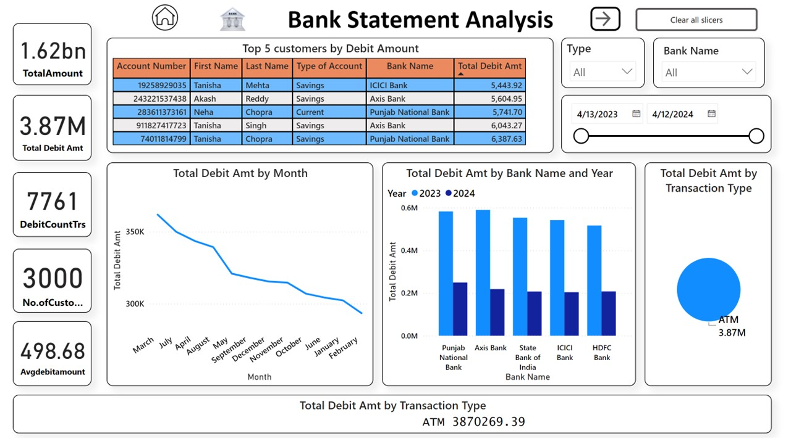
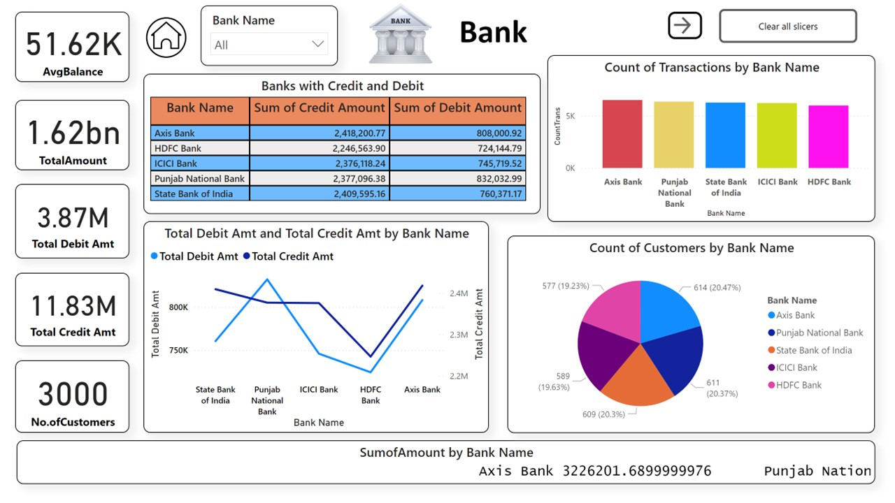
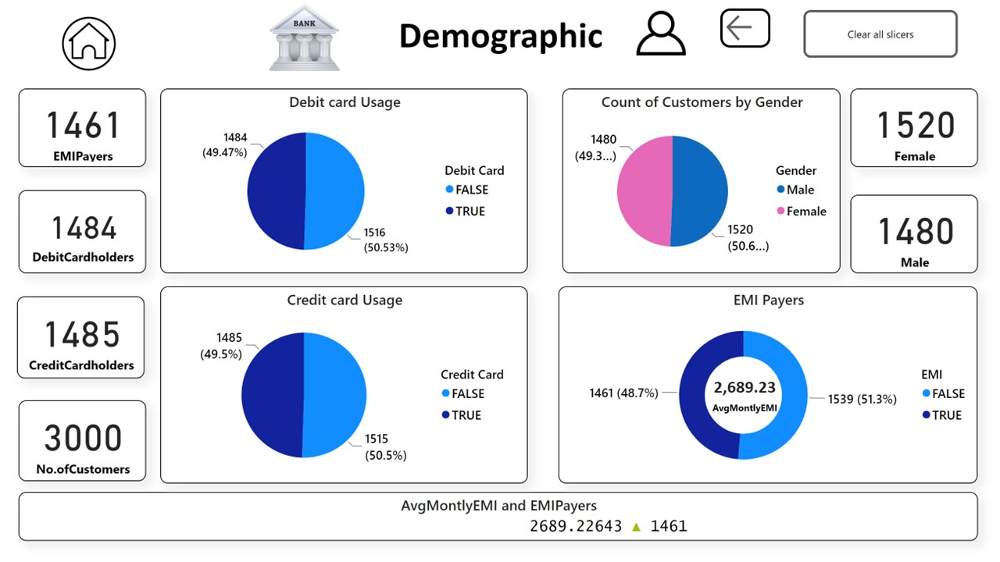
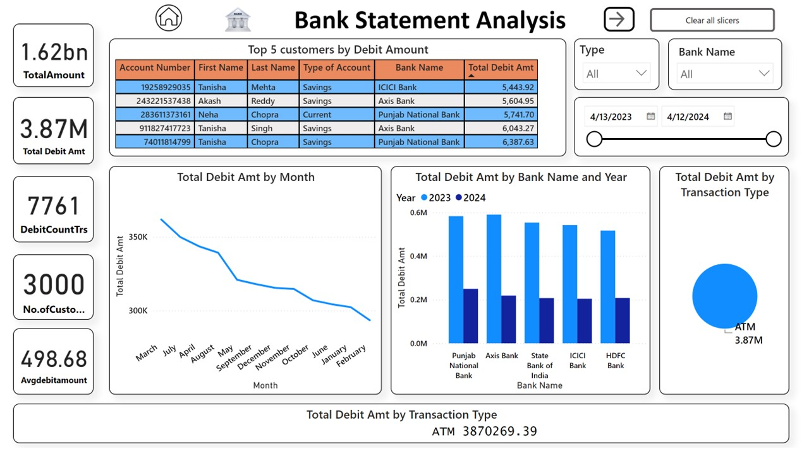
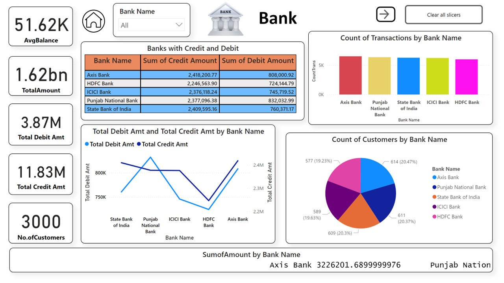
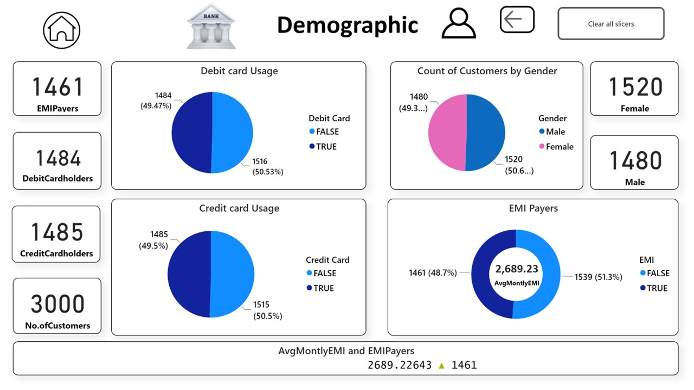